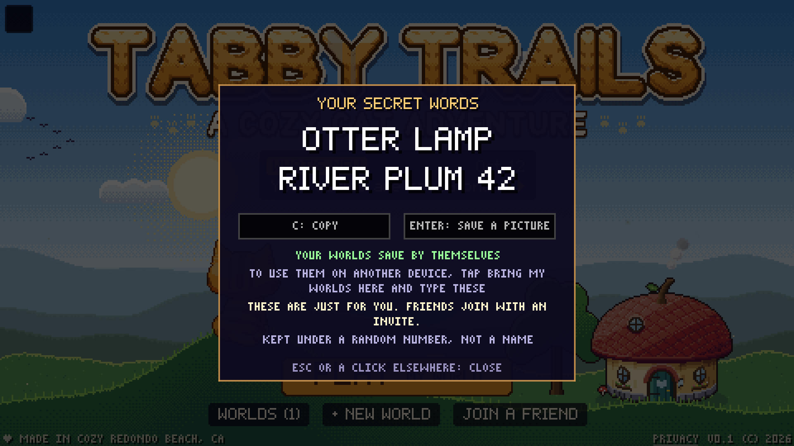
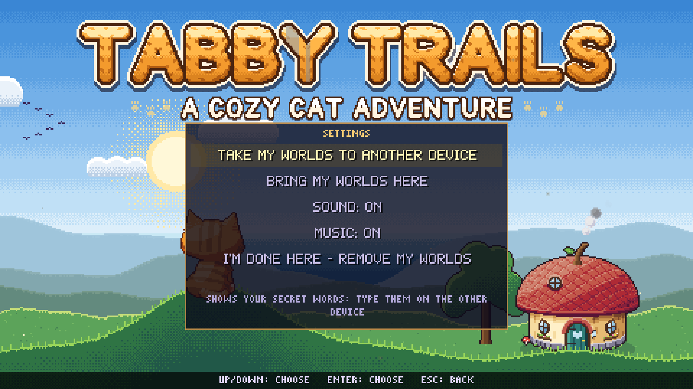

Cloud saves with no account: four words and two digits
Until this week, a world in Tabby Trails lived in exactly one place: the storage of whichever browser it was made in. That works right up until somebody clears their browser or gets a new tablet, and then a village that took weeks to build is simply gone. It was the worst thing that could happen to anyone in the game, and it had nothing to do with wolves.
So worlds are saved online now, as you play. The ordinary way to do that is an account, with an email address and a password, and I spent a while trying to talk myself into one before deciding the game was better off without. What you get instead looks like this:

Four words and two digits. Type them into the game on another device and your worlds turn up there. (Those particular words are the example from my own code comments.)
Why not just have accounts
Mostly because of who the game is for. Tabby Trails is made for players of about ten to fifteen, and an email address is exactly the kind of thing I don't want to be holding on their behalf. Plenty of them don't have one, the ones who do would have forgotten the password by Thursday, and a forgotten-password flow means sending mail, which is a whole second system to look after from a spare room. More than any of that, the safest personal data is the data that was never collected. If all the database knows is a random number, there isn't much in it to leak.
The other reason is that nobody should have to do anything to be saved. There's no sign-up screen. The first time the game talks to the server it's handed a cookie that the page's own code can't read, holding a random id and a 256-bit secret, and from then on that device's worlds go up by themselves, at most once a minute. The game doesn't even bring the words up until you've played for about twenty minutes and then saved and left. They only matter once a second device comes into it.
What the server knows
The players table has three columns: a random id, when it was made, and when it was last seen. The comment I left above it says "No name, no email, no address", mostly so that future me has to delete a comment before adding one.
The saves are kept as sealed files. The game gzips a world and sends the bytes with a checksum, and the server stores them without ever opening them. I like this more the longer I live with it: no change to the game can corrupt a save on the server, and no change to the save format needs a database migration. A new world is about 2 KB, and a very busy one, with 200,000 changes in it, came out at around 1 MB.
The words themselves are never stored. They go through scrypt, which is slow on purpose, and then through a keyed hash whose key lives only in the server's settings. That one value is both how a set of words is looked up and what proves them, so a copy of the database by itself says nothing about anybody's words. It also means the server can't show you yours a second time. A device that has lost its copy is simply given a new set, and every set you've ever been given keeps working, so a picture you saved a year ago is still good.
Picking 1,024 words
Each word comes from a list of 1,024, which makes a word ten bits, and with the digits a full set is about 46 bits, or some 99 trillion possibilities. That is well short of a good password, which is why wrong guesses are counted hard (five, then one every two minutes) on top of the slow hash.
The list took longer than the cryptography did. Somebody is going to read these off one screen and type them into another, so every word is three to six letters long, common, spelled only one way, and sounds like no other word and no number. The digits run from 10 to 99 and never start with a zero, because "07" gets read out loud as "seven". As you type, the game offers the words it could be, and it says straight away if you've typed one that isn't on the list. And the list can never lose or change a word, because the sets already out there are made of them. There's a test holding its checksum, in case I get clever one day.
Two devices, one world
Once a world can be in two places, two devices can both believe they have the newest copy. Rather than try to merge anything, the server keeps a turn for each world: one tab on one device holds it, and only that tab's uploads are taken. A tab says "still here" every ten seconds, and a device that goes quiet for two minutes can have its turn taken by another. If it comes back later with play of its own, that play isn't thrown away and doesn't become a second world. It's set aside, as a copy of the same one. Older copies are thinned as they age: the newest two whatever happens, then one per quarter of an hour for two hours, one an hour for a day, and one a day for a month.
What it costs

None of this is free. Anyone who has your words can open your worlds, so the game calls them secret words everywhere, and never takes them on the same page as a friend's invite code. (I tried one box for both and dropped it. Paste your words into the invite box now and it refuses them and tells you to keep them to yourself.) When words are typed in, the game lists the worlds it found by name and asks if they're yours, with "no" already selected, because joining two sets of worlds can't be undone. And if you lose the words and the device both, there's no "email me a link" to fall back on. That's the trade, and for this game I think it's the right one.
The tables keep who you are, how you prove it and what you own apart from each other, so an email sign-in could be added later as one more way of proving it, without a single world having to move. I'd just rather not, until somebody asks.
It's all switched on, and the game runs in the browser. Once you have a world, the gear on the home screen has your words.
Also lately
- A cat can build its own home out of round rooms, and repaint each one at the room itself.
- Persian rugs, woven from wool in three sizes.
- A leash, for walking a named animal friend at heel.
- The home screen follows your own clock: golden hour, dusk, and fireflies after dark.
- Sand takes footprints the way snow does.
- A new cat starts out with one of a hundred names (Mochi, Miso, Biscuit, Churro) instead of CAT and two letters.